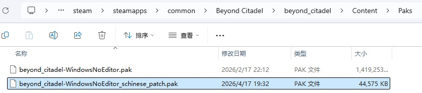
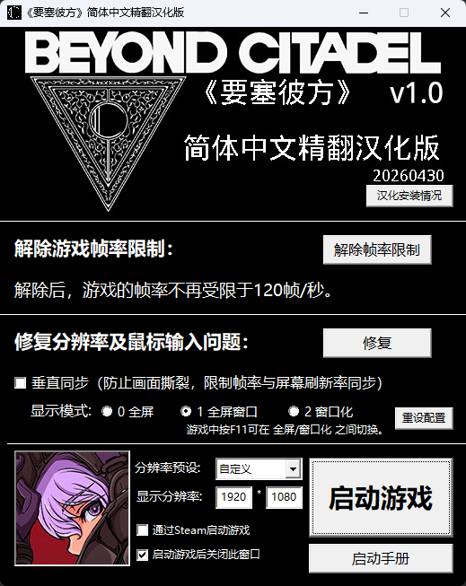
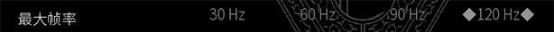
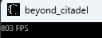

安装说明
安装方法
将汉化补丁对应游戏目录覆盖即可。
即：将汉化补丁文件"beyond_citadel-WindowsNoEditor_schinese_patch.pak"
安装至"Beyond Citadel\beyond_citadel\Content\Paks"目录下，

然后启动游戏，游戏内原英文语言则会变为简体中文语言。
若要卸载此简体中文汉化补丁，只需要将汉化补丁文件"beyond_citadel-WindowsNoEditor_schinese_patch.pak"从游戏目录中删除即可。

本汉化补丁附带启动程序。将启动程序安装至游戏目录下（即与beyond_citadel.exe位于同一目录下），即可通过启动程序上的“汉化安装情况”按钮检查汉化补丁是否已正确安装。
常见问题
帧率锁定
此汉化补丁附带解除帧率限制修复工具。
在游戏目录下，打开启动程序"《要塞彼方》简体中文精翻汉化版.exe"，点击“解除帧率限制”按钮即可修复。
Beyond Citadel游戏内可选的最大帧率选项为120帧/每秒。

此工具通过替换图像配置文件的方式，解除游戏的帧率限制（将帧率限制设为最大可达999帧/每秒），让游戏画面显示更加流畅。

解除后，其他的关联图像设置，“视野范围”、“暴力内容”等，会被一并覆盖。
若需要改回其他图像设置，只需进入游戏后在手动设置即可。
中途崩溃
安装汉化补丁后，在游戏中初次触发某些与文本相关的事件（如载入地图、浏览文本）时，可能会发生游戏崩溃的现象。
猜测可能是文本相关内容相对原游戏发生变化导致。同一事件最多会出现一两次崩溃情况，之后触发就不会再发生。
若发生崩溃现象，重启游戏即可。
画面分辨率不正确 或 鼠标输入不正确
您有可能会遇到游戏存在的两个问题：画面分辨率不正确，可能存在显示模糊情况；鼠标输入不正确，时常转动视角后鼠标点击无反应，无法开枪或瞄准的情况。
这两个问题大概率是游戏分辨率默认最高只支持1080P，和全屏模式未正确限制光标范围，移动鼠标时光标超出游戏窗口所致。
此汉化补丁附带修复工具。
在游戏目录下，打开启动程序"《要塞彼方》简体中文精翻汉化版.exe"，点击“修复分辨率及鼠标输入问题”右方的“修复”按钮即可修复。
此工具会根据您的分辨率和选项设置，配置相关参数，修复此类问题。
关于显示模式：
0 全屏 - 启动时，会以真正的全屏模式运行游戏，游戏的运行帧率可能会相较后面两个选项略高一些。尽管启动程序已进行修复，但如果您发现仍存在鼠标输入不正常的问题，建议您改成后面两个选项运行游戏。
1 全屏窗口 - 启动时，会以全屏窗口模式运行游戏，但启动程序中的分辨率设置不一定有效，默认会以您的屏幕分辨率运行游戏。
2 窗口化 - 启动时，会以窗口模式运行游戏。游戏的窗口可以任意拖拽调整大小，且随时可以按F11在全屏与窗口模式之间切换。